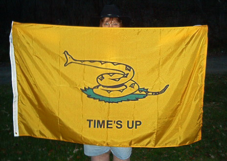
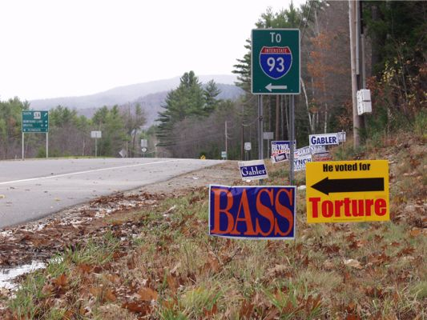

WolfesBlogArchives: November 2006
Thursday, November 30, 2006
THE KATHRYN JOHNSTON CATASTROPHE just looks worse and worse.
And why oh why oh why would any police agency in the country keep an officer on staff (and out of jail) who lied and even fabricated charges against an innocent motorcylist he severely injured in a traffic accident? Think about it. What kind of standards -- of justice, of decency, of safety -- would someone have to have to entrust a man like that with life-and-death authority over citizens? That officer very likely belonged in prison even before the Johnston slaughter. He certainly shouldn't have been handed the authority and the weaponry to go around potting old ladies.
What on earth are city officials thinking when they hire and retain people like this? It makes as much sense as handing car keys and a bottle of Jack Daniels to a teenage delinquent.
Yet the worse cops become, the more we're expected to give them the "Yes, massah, anything you say, massah" treatment. Does this make sense to anybody?
Posted by Claire @ 08:50 AM CST [Link]

THE BEAUTIFUL DULL'HAWK FLAG is now available, just in time for Christmas, Kwanzaa, Hannukah, or Yule. Get 'em on eBay or contact Dull'Hawk directly via private message at TCF.
Posted by Claire @ 06:51 AM CST [Link]
Wednesday, November 29, 2006
ENCOURAGING SIGNS. The other day the Christian Science Monitor ran an article correctly (but perhaps too naively) questioning the casual use of military tactics in law enforcement. We can now be even more sure this long-overdue question has hit the mainstream. Popular Mechanics takes it on in a much stronger article written by Glenn Harlan Reynolds.
The two most important voices against paramilitary outrages -- criminologist Peter Kraska and blogger Radley Balko -- are finally being heard by somebody other than colleagues and frustrated libertarians.
Let's hope it's not too little/too late or just another passing media mention. The Kathryn Johnston outrage ought to (in a better world) become the "Rosa Parks on the bus" moment that ends not only SWAT overkill, but many other evils of the evil drug war, as well. It has it all -- no-knock raid, lying informant, innocent victim, total overkill -- and all in the excuse of combatting completely non-violent "crime."
Posted by Claire @ 08:43 AM CST [Link]
Tuesday, November 28, 2006
IF YOU'RE SEARCHING FOR A UNIQUE BUT AFFORDABLE GIFT take a look at the beautiful calendar featuring photos by TCFer Bear and layout and printing by TCFer lewlew, who owns Victory Graphics with her husband. The three-page 2007 calender features freedom quotes and haunting photos of Bodie, a famous California ghost town.
Just $4.50 apiece, with $.50 of that going to benefit The Claire Files forums.
Hm. If this sells well, maybe we can talk lewlew and Bear, and maybe that equally wonderful (albeit very different) photographer and blogista Thunder into producing another calendar next year.
Posted by Claire @ 12:54 PM CST [Link]
Sunday, November 26, 2006
GET YOUR SURPLUS AMMO NOW! Blogispondent Ian here. I have heard from several reputable sources that there will be no more surplus ammo coming into the US in the foreseeable future. Not just .308 (which has run out recently), but all surplus ammo - no more import deals are being approved by the Feds. So if you plan to get any, do it now before it all dries up.
Posted by Ian @ 01:46 PM CST [Link]
Friday, November 24, 2006
HM. WHAT NEXT? Make them all ride in the back of the bus?
Posted by Claire @ 01:23 PM CST [Link]
THE FIFTH AND CONCLUDING SEGMENT of "E-Passport: Doorway to the Panopticon" is now online. Thank you again to Scarmig for allowing me to post the articles here. And to Thunder who stood vigilantly as backup poster, in case the weather gods blitzed my Internet connection again.
Posted by Claire @ 09:29 AM CST [Link]
Thursday, November 23, 2006
TODAY'S THANKSGIVING DINNER PREPS are somewhat hindered by a shortage of opposable thumbs here at the Wolfe household. Previously, between six residents, we had two of those useful items. Now, owing to an accident yesterday involving an overeager dog, a under-vigilant dog-mom, and two hours in the emergency room, my formerly dominant thumb is performing roughly the same function as a dog's dew claw. Which is to say, none.
One thumb. Seven Thanksgiving dishes to prepare. It's a challenge.
Nevertheless, my temporary descent of the evolutionary ladder hasn't stopped me from making my favorite Decadent Potato Casserole or any other Thanksgiving delights. I love Thanksgiving. It's my favorite of all holidays. No artificial good cheer. No Christian facades pasted over pagan revels. No endless shopping. Just being with those you love and spending time in peaceful gratitude. Oh yeah, and shoveling down some of the year's best food.
I was going to try to list all the specific friends (and friendly strangers) to whom I feel special gratitude -- all those who've gifted me with beautiful music, health & pleasure, knives & knifemaking experiences, adventures, artworks, books, apricots!!!, generous donations of money, and even one especially cool gun-nut tee-shirt. I was going to include those who've brought friendship, inspiration, knowledge, artistic collaboration, good work, and loving support into my life. Then I realized if I tried to list everyone, I'd risk slighting someone. So let me just say that you know who you are and I know who you are and you have brought blessings to my life. I hope in some little way I've also brought something good to yours.
Even as America's days get darker, there's still a lot to be grateful for. If you need some help picking your mood up today, here are just a few random cheerups for ya: [more]
Posted by Claire @ 01:17 PM CST [Link]
"E-PASSPORT: DOORWAY TO THE PANOPTICON." Part IV of Scarmig's excellently chilling series is now online.
Posted by Claire @ 08:23 AM CST [Link]
TO WILL GRIGG I SAY ONCE AGAIN A-&^%$#ING-MEN! This time re the tasing of the UCLA student simply because he didn't want cops manhandling him as he walked out of the library. (And other matters of the militarized state vs the people.)
Posted by Claire @ 08:20 AM CST [Link]
Wednesday, November 22, 2006
"E-Passport: Doorway to the Panopticon," Part III is now online.
(And a sneaky hint: It seems Strike-the-Root also put Scarmig's articles online this week. When Scarmig offered them to me, STR had been sitting on them for a while. Then they leaped ahead and put up all five at once. Ah well. The more these articles get around, the better. So if you just can't wait to see the rest of the series, get yourself on over to STR.)
Posted by Claire @ 09:36 AM CST [Link]
Tuesday, November 21, 2006
WHILE GOOGLING HITHER, THITHER, AND YON in research, I stumbled upon this old flawed gem of a book, whose entire contents appear to be online:
Undermining the Constitution: A History of Lawless Government by attorney Thomas James Norton, published 1950.
Mr. Norton didn't like the income tax. Didn't like social security. Didn't like "poorly informed university men" (and a big amen to that). Didn't like the Roosevelt administration (are we surprised?). Didn't like the fact that poor men of integrity can no longer serve in the U.S. Senate, thanks to amendment XVII. And he had both the legal chops and the brevity to say why without putting his readers to sleep.
Not exactly a libertarian. Certainly no fan (quite the contrary!) of Holy Democracy. But if you're looking for something interesting to read while the ravening hordes of your extended family are watching football, pillaging your kitchen, or arguing over which of your aunts was entitled to great-grandma's china even though some other aunt (how dare she?) inherited it, this could be just the ticket.
Posted by Claire @ 08:12 PM CST [Link]
TODAY, IN PART II OF "E-PASSPORT: DOORWAY TO THE PANOPTICON," Scarmig takes us into the world of facial-recognition technology.
Posted by Claire @ 09:12 AM CST [Link]
Monday, November 20, 2006
TODAY I'M PRIVILEGED AND HORRIFIED to begin publishing a five-part series of articles. The series "E-Passport: Doorway to the Panopticon" was researched and written by the young man I know only as Scarmig.
Each day this week I'll post another segment. Even if you thought you knew everything there was to know about the dangers of biometric, RFID-enabled government identity documents, do yourself a favor. Take the time to read these articles in full. Scarmig's research is impeccable. He reveals a breadth, depth, and history to the onrushing global identity systems (in which the e-passport is only one link) that even the most dedicated watchers of the surveillance state probably don't know.
Thank you to Scarmig -- and a nod to Rob at Strike-the-Root who had the original publication rights but graciously allowed Wolfesblog to share the honors.
(Note: My Internet connection is still unstable. Should it go down again, I'll post the next segment at the earliest opportunity.)
Posted by Claire @ 10:49 AM CST [Link]
Saturday, November 18, 2006
I FREECYCLED A FUTON THIS WEEK. It was a good futon with a frame configurable into a variety of useful positions. Too big for Cabin Sweet Cabin, though. I'd been thinking for a long time about selling it, but could never get up the oomph to post an ad and have a bunch of strangers calling and wandering in and out of my very private abode.
Not sure who turned me on to the Freecycle network (probably Debra -- let me know if I'm wrong on that). In any case, it was a good find. With Freecycle, you can offer or request all kinds of items by email, as long as no money changes hands.
[more]
Posted by Claire @ 10:27 AM CST [Link]
Friday, November 17, 2006
OKAY, I KNOW NOBODY CARES WHAT HAPPENS IN TONGA. (Does anybody out there care what happens in Tonga?) But I've been keeping a casual eye on the place ever since the Tongans' humiliating takeover of that poor little libertarian experiment, the Republic of Minerva. I happened to note just a couple of weeks ago that, despite its tropical-paradise reputation, Tonga is a notorious sink of political and economic corruption.
Well, it seems that Tongans -- that is, those not connected to the royal family, its loot, and its political patronage -- have had enough. They've waited and waited for reform, and now they're making their displeasure abundantly known.
What should make this news interesting even to all you vast armies of non-Tonga-watchers is the response of Tonga's bigger "democratic" neighbors, Australia and New Zealand. Riots begin and immediately both of these "democracies" pledge to send troops and cops to support the extremely corrupt and undemocratic government. Huh?
First of all, why not just let the Tongans take care of Tonga? There are only 100,000 of them, and it's not as if they're threatening to nuke Sydney or Melbourne. When a government oppresses its people, sometimes those people need to teach government hard lessons. Obedience just reinforces the status wretched quo.
So if you believe in "democracy" why rush to support a bloated and ugly monarchy against those demanding more representation?
Could it be because the allegience of governments is first and formost to governments -- all claims of "democracy" aside?
(ADDENDUM: To be fair, at least one report says that pro-democracy factions also want the international policing because Tongan "security forces" work for the king. Most other reports, however, make it clear that the Tongan government asked them in, and that the job of the foreigners is to ensure "order.")
Posted by Claire @ 08:47 AM CST [Link]
Thursday, November 16, 2006
MY INTRODUCTION TO GOLD Blogispondent Ian here. I went to sell a gun the other day, and came away with more than I'd expected. I've been saving up money for a new project, and decided to sell off one of my extra firearms to help things along. So I did some advertising, and found a local buyer, and set a time and place to meet. I met my buyer there, and he looked over the gun, and decided that he did indeed want it. So far, this had all run just like any other routine gun sale - but at this point the guy did something that hadn't ever happened to me before. He pulled out both a wad of green paper in the amount I was asking for, and also a single gold coin in a little plastic sleeve. A Krugerrand, to be specific. And he offered me the choice of taking either one as payment.
Well, I thought about that choice long and hard...for about two seconds. And chose the coin. How could I turn it down? Here I am, having read libertarian economics for pretty much all of my adult life, but having never dealt with anything but Federal Reserve Notes. There is something just indescribably alluring about that gold coin...the idea that right here in my hand is real money, something with value anywhere and at any time. It's solid and weighty and shiny, and just exudes "real"ness in a way that paper currency just can't hold a candle to. I think I'm hooked now - I want more of it!
Posted by Ian @ 04:54 PM CST [Link]
ACHTUNG! Student tasered for refusing to show "Papers, please!" You can see a portion of this Glorious Act of Freedom on YouTube (where the viewer comments are pretty interesting, too).
Once again mere possession (and obedient showing) of an ID card is automatically equated with "safety." What an amazing superstition. This poor student may have actually hoped others would join in resistance (depending on which account you believe). That, unfortunately is a pretty amazing superstition in police-state America.
Posted by Claire @ 01:07 PM CST [Link]
MILTON FRIEDMAN sometime hero of liberty, but also cursed inventor of the payroll withholding tax has died.
Well, if nothing else, he gave the world his son David, who gave the world his absolutely fascinating research into the laws of medieval Iceland -- laws which "might almost have been invented by a mad economist to test the lengths to which market systems could supplant government in its most fundamental functions."
Posted by Claire @ 12:58 PM CST [Link]
Wednesday, November 15, 2006
"THE COUP: ARMS AND ARGUMENTS." The latest episode in Hardyville's crisis of government is now online.
(And thanks to Bill St. Clair and the wonders of the Internet for enabling a quick fix of a firearms goof.)
Posted by Claire @ 11:28 AM CST [Link]
Tuesday, November 14, 2006
I'M WORKING ON A SWAT ARTICLE about habeas corpus, which has carried me way back to many of England's bad old days. My favorite part of English history is the absolutely calamitous 17th century. In less than 100 years, the poor old Mother Country beheaded one king and deposed another. They had a civil war followed by something they still call their "Glorious Revolution." They spent a while being ruled by a bloodthirsty religious fanatic, Oliver Cromwell. And for good measure, in a single two-year period, they had a resurgence of the black plague and the Great Fire of London. Makes modern times look peaceful by comparison.
The 17th also played a big part in the modern development of "The Great Writ."
The Stuarts were the ruling royals through most of that century (or at least those parts of the century when the beleagured Brits didn't simply go kingless). A more loathsome lot never bore the scepter. And given the loathsomeness of typical rulers everywhere, that's saying something.
[more]
Posted by Claire @ 08:03 PM CST [Link]
Monday, November 13, 2006
Fantasy Football. For the Political Junkie.
Raving Reporter Thunder here.
There's a popular beer commercial out there that salutes "Mr. Fantasy Football Manager Guy." It states that the biggest qualification to play Fantasy Football is to not have any experience playing REAL football.For you political junkies, there's now Fantasy Congress. However, unlike with Fantasy Football, I think someone that has no experience in Congress qualifies them to play for real instead of the other way around. Sure as Hell couldn't do any worse than the reprobates, liars, and jackasses that are there now, right?
Posted by Thunder @ 12:44 PM CST [Link]
Saturday, November 11, 2006
"GUNS THE GOVERNMENT DOESN'T LIKE." David Codrea speaks with outraged eloquence on the arrest of a member of the Washington County (Arkansas) Militia. And reports on the birth of a new blog in support of Hollis Wayne Fincher.
Fincher and fellow militia members made an elaborate and well-documented case against the 1934 National Firearms Act (see the "Silver Bullet" document on the "U.S. v Fincher" blog). That act is blatantly unconstitutional. The ATF response: whack 'em, hold 'em without bail, and make the gun owners (rather than the brutal, illegal ATF) sound dangerous. The usual.
If you're fearful because "anti-gun" Democrats have replaced "pro-gun" Republicans in Congress, consider: This latest bust of a peaceable gun owner was the work of Project Safe Neighborhoods -- a program invented by the George W. Bush administration and supported enthusiastically by the NRA.
Posted by Claire @ 07:17 PM CST [Link]
Friday, November 10, 2006
TUESDAY'S VOTE. IT WAS A LANDSLIDE! But not actually for the Democrats.
Posted by Claire @ 08:27 AM CST [Link]
IF IT WORKS SO WELL IN FALLUJAH ...
In recent months, insurgents have filtered back into the city, despite tight controls that limit access to only six checkpoints. Residents must submit to an extraordinary identification system that includes fingerprinting, retina scans and bar-coded identification cards.Just think how brilliantly "ironclad" biometric ID will work in the land of the free.
Posted by Claire @ 07:26 AM CST [Link]
Thursday, November 9, 2006
DON'T MISS IT. THE AUCTION FOR A COOL "MOLON LABE" COFFEE MUG ends Saturday on eBay.
TCFer Brenda was kind enough to post the auctions for this (and other Molon Labe merchandise) to benefit the Richard Celata family of Dillon, Montana, whose home and business, KT Ordnance, were raided by the BATFE this spring. The Celatas had their home pawed through and their posessions stolen (and declared forfeit), all without anyone being accused of a crime.
The Celatas' new Molon Labe site is also now online. It's good to see them selling 80 percent kits again. Remember, you can help them out by bidding at the auction. And by buying from KT Ordnance or Promised Land Products (certified organic cleaning products and cast-iron cookware).
Posted by Claire @ 09:17 PM CST [Link]
COUPLE OF INTERESTING THOUGHTS here:
There's plenty of evidence to suggest that President Bush may have been the deciding factor that killed the GOP's momentum in some key Senate races over the last week. One Republican consultant is convinced that Bush's last-minute visit to Missouri on behalf of ousted GOP Sen. Jim Talent did the incumbent in. According to the network exit polls, Democrat Claire McCaskill crushed Talent among those late-breaking voters who decided in the final three days (a full 11 percent of the electorate). Bush also made a last-minute trip to Montana, where anecdotal evidence indicates the president's rally for Republican Conrad Burns stopped the incumbent's momentum in Billings.Hm. I'd been wondering about that. It's far from proven, but seems logical
And:
Forget "red" and "blue." The country is basically divided into four voting blocs: the Democratic Northeast, the Republican South, the populist Midwest and the libertarian West. Democrats probably have a decent grip on those populist Midwest voters for a while (at least until the area transforms completely into a new economy). As for the libertarian West (home of the first state -- Arizona -- to reject a gay marriage ban), this is a region that is more up for grabs than it should be. And it's because the Republican Party has grown more religious and more pro-government which turns off these "leave me alone," small-government libertarian Republicans.I wish the West were as libertarian as pundits lately think it is. Still, I'm glad to be here rather than in, say, Massachusetts. Fashionable talk is right now that the alleged libertarian bloc (around 13 percent of the country, according to the Catoites) is the great swing faction & that politicians are all missing an enormous bet by not catering to us.
Yeah. But how can they cater to real libertarians? All they can do is up their lie quotient. We promise to limit the size of government. We promise to respect the Bill of Rights. We promise to end the drug war. We promise no foreign adventurism. We promise to eliminate useless excresences like the Department of Education. We promise to repeal all laws that hinder peaceable gun ownership. Yeah, right.
Politicians may cynically use us, as "Saint Reagan" (and later the oily and inexcusable Bush 2000) did -- conning hopeful and naive freedom seekers into offering up limited-government votes for their unlimited-government ends. Jacob Hornberger nails it.
There is no political profit and no power in genuinely serving libertarian Americans. Libertarians (and fellow government-slashing sorts) are the last remaining completely unrepresented minority group. And likely to remain so.
Posted by Claire @ 08:11 AM CST [Link]
Wednesday, November 8, 2006
W.G.E.N. JUST SENT THIS picturesque thought for the day after the Invasion of the Democrats. I couldn't resist. Had to blog it immediately
Posted by Claire @ 03:44 PM CST [Link]
ABOUT THOSE "NO ENTRY" WINDOW CLINGS ... two info-bits. First, only about 15 are left, so if you mean to get some, order ASAP. Second, if you already have ordered you should know that it takes good, hard burnishing to get the printed side to cling to your window glass. I got a note this morning from someone who thought the clings didn't work. But don't worry; once you burnish them down, they cling to your windows like champs. Oh, clean the window first, too. Even invisible skuzz (and dog nose prints) can impair clingability.
Thanks again to Victory Graphics for the nice work on the printing and layout.
Posted by Claire @ 08:06 AM CST [Link]
I CONFESS, I'M STILL A POLITICAL JUNKIE. Not a voter; hell no. Not since the betrayal of 1994. But sitting up late to watch election returns is better than birthdays, Thanksgiving dinner, and sex.
I got my love of politics from my Mama; when I recall childhood, those election-night sessions before the TV stand out as far more exciting than Christmas. We kids would sit there 'til we couldn't keep our eyes open. If we finally had to crawl to bed with key results stil pending, Mom might even wake us up in the middle of the night with breaking news. (The most memorable of those mid-night wakeups was a surreal one: the assassination of Robert Kennedy moments after he declared victory in the California presidential primary.)
No TV at Cabin Sweet Cabin. But last night the weather gods relented and I had a clear Internet connection for the first time in six days. And the radio was working without its usual crackles. Praise be and glory hallelujah. I sat there listening to NPR and monitoring the election returns simultaneously on abc.com, the Washington Post website, and npr.com (I did say I was a junkie, right?).
[more]
Posted by Claire @ 07:51 AM CST [Link]
Monday, November 6, 2006
IF I WERE A GOD (it's probably a very good thing I'm not, but if I were), I'd opt for maximum mercy in most cases. No going to hell for fibbing to your Mommy. No indiscriminate smiting. No plagues of boils inflicted merely to win bets with adversaries. That sort of stuff is so very Old Testament.
But certain sins -- mostly those exclusive to the powerful, like genocide or debasing the currency (which slaughters cultures, even as it leaves bodies alive) -- would not be forgivable, no matter how many acts of contrition were enacted or how many pious prayers were promulgated by the miscreants. The harm is too vast. And it's committed by people who ought to know better.
Hypocrisy in high places would be among the few unforgiveables -- particularly the smug moral hypocrisy of the Mark Foleys, Ted Haggards, et al. and ad infinitum.
People who lead crusades demanding punishments against behaviors they themselves practice might present complex cases for pop psychologists to ponder. But from a god perspective, they're the simplest of the simple. Dealing with them doesn't require a brain the size of several small planets.
If I were a god I wouldn't merely insert such creatures into the mouth of Satan. (Dante not only picked the wrong people to punish most severely; he was really far, far too nice.) Wearing the godly equivalent of surgial plastic gloves, I'd shove every politically or religiously powerful hypocrite up the devil's hairy anus, where they could spend all eternity enjoying an atmosphere uniquely matched to their nature, occasionally getting their skin stripped off by huge sulphuric, Satanic farts.
Only way they could ever get forgiven is if, before they died, they managed not merely to "repent" (ho hum, how cheap and easy that is for such folk), but to undo every act of harm -- physical, legal, psychological, marital, financial, etc. -- that their hypocrisy-from-on-high ever caused. Can't do that, boys? Then it's up the devil's backside with you with nary a regret.
Posted by Claire @ 12:55 PM CST [Link]
THE GODS AND THEIR SENSE OF HUMOR. Gotta love 'em. Or not. But whatever you do, you can't stop 'em from laughing at us mere humans.
Last July, I reluctantly signed up for WildBlue satellite Internet. It seemed my only realistic choice after the local Internet cafe closed its doors. Once WildBlue was installed, it became convenient again to earn a living, do research, and keep in touch with my friends. But that big ugly dish clinging to the side of Cabin Sweet Cabin blasted the hell out of my year of silence. Suddenly instead of contemplation and creativity I was sucked back into the realm of always-on bad news and constant casual connections.
The Internet: can't live with it, can't earn a living without it. Depressing.
Ah, but remember those gods?
[more]
Posted by Claire @ 12:49 PM CST [Link]
Sunday, November 5, 2006
ON ROBBERS AND RULERS:
Without justice, what are kingdoms but great robber bands? What are robber bands but small kingdoms? The band is itself made up of men, is ruled by the command of a leader, and is held together by a social pact. Plunder is divided in accordance with an agreed upon law. If this evil increases by the inclusion of dissolute men to the extent that it takes over territory, establishes headquarters, occupies cities, and subdues peoples, it publicly assumes the title of kingdom! This title is manifestly conferred on it, not because greed has been removed, but because impunity has been added. A fitting and true response was once given to Alexander the Great by an apprehended pirate. When asked by the king what he thought he was doing by infesting the sea, he replied with noble insolence, "What do you think you are doing by infesting the whole world? Because I do it with one puny boat, I am called a pirate; because you do it with a great fleet, you are called an emperor."St. Augustine,
The City of God,
Book IV, Chapter 4
Posted by Claire @ 10:18 PM CST [Link]
NEED IDEAS FOR DESIGNING YOUR HOME? Blogispondent Ian here, and I've got the book for you! Or rather, your local library or bookstore has it. It's Home Work: Handbuilt Shelter, by Lloyd Kahn. I found a copy at my local library, and am really enjoying it. It's a collection of photographs of owner-built homes, and unlike some similar books it includes lots of details, descriptions, and conversations with the builders.
The buildings cover the whole spectrum of materials, sizes, and environments imaginable - from homemade camper vehicles to sprawling homestead complexes. I think everyone can find lots of good ideas for their own projects, whether you envision a traditional cabin or a manic work of LSD-inspired art. Materials run the gamut from lumber and logs to earthbags, strawbales, lightweight concrete, and stone. The work that went into some of these homes - and the results - will simply take your breath away.
The publisher has a web page set up for the book, which includes a bunch of sample pages. Check it out!
Posted by Ian @ 08:17 PM CST [Link]
REMEMBER, REMEMBER ...
Good evening, London. Allow me first to apologize for this interruption. I do, like many of you, appreciate the comforts of every day routine- the security of the familiar, the tranquility of repetition. I enjoy them as much as any bloke. But in the spirit of commemoration, thereby those important events of the past usually associated with someone's death or the end of some awful bloody struggle, a celebration of a nice holiday, I thought we could mark this November the 5th, a day that is sadly no longer remembered, by taking some time out of our daily lives to sit down and have a little chat. There are of course those who do not want us to speak. I suspect even now, orders are being shouted into telephones, and men with guns will soon be on their way. Why? Because while the truncheon may be used in lieu of conversation, words will always retain their power. Words offer the means to meaning, and for those who will listen, the enunciation of truth. And the truth is, there is something terribly wrong with this country, isn't there? Cruelty and injustice, intolerance and oppression. And where once you had the freedom to object, to think and speak as you saw fit, you now have censors and systems of surveillance coercing your conformity and soliciting your submission. How did this happen? Who's to blame? Well certainly there are those more responsible than others, and they will be held accountable, but again truth be told, if you're looking for the guilty, you need only look into a mirror. I know why you did it. I know you were afraid. Who wouldn't be? War, terror, disease. There were a myriad of problems which conspired to corrupt your reason and rob you of your common sense. Fear got the best of you, and in your panic you turned to the now high chancellor, Adam Sutler. He promised you order, he promised you peace, and all he demanded in return was your silent, obedient consent. Last night I sought to end that silence. Last night I destroyed the Old Bailey, to remind this country of what it has forgotten. More than four hundred years ago a great citizen wished to embed the fifth of November forever in our memory. His hope was to remind the world that fairness, justice, and freedom are more than words, they are perspectives. So if you've seen nothing, if the crimes of this government remain unknown to you then I would suggest you allow the fifth of November to pass unmarked. But if you see what I see, if you feel as I feel, and if you would seek as I seek, then I ask you to stand beside me one year from tonight, outside the gates of Parliament, and together we shall give them a fifth of November that shall never, ever be forgot.Posted by Claire @ 09:49 AM CST [Link]
Friday, November 3, 2006
READING THUNDER'S POST ON THE BAD NEWS ABOUT PRIVACY in the U.S., I was reminded of another report from earlier in the week. Reporters Without Borders said the U.S. is 53rd in freedom of the press. Tied with those glorious havens of liberty, Croatia, Botswana, and Tonga (a sink of political and economic corruption for all its tropical-paradise reputation).
These reports keep coming out more and more. Saw one a few months ago on economic liberty. Again, U.S. slipping from the top (though not yet so far fallen as on this week's indexes). So sad, this magnificent experiment of a country, going away.
But we are not supposed to notice any of this. We are not supposed to see the monster because as you all know, if you don't see the monster, the monster can't see you. Yeah, that works. That works real well. But what the hey, goods from China are plentiful and cheap, even if they're all most of us can afford any more. And as one of those "experts" said in one of this week's privacy stories (I paraphrase), "Yes, but you can't compare the U.S. to other countries when it comes to surveillance because after all, they have a war on terror to fight."
Oh yeah. That makes it all well, too. You don't see the monster, the monster can't eat you. Just remember that, people. Keep telling yourself that ...
Posted by Claire @ 07:53 PM CST [Link]
Thursday, November 2, 2006
United States: Haven of Privacy?
Raving Reporter Thunder here.
How much do you like your privacy? If you live in the U.S., you have a lot less privacy than you think you do. This isn't news to most privacy advocates, but care to guess how the U.S. compares to other nations?
2nd? 3rd? 5th?
Try ranked just above countries like China, Russia, Malaysia.....
Here's the link to the reporting story.
(Thanks to Gunslinger for the link)
Posted by Thunder @ 02:12 PM CST [Link]
New Hardyville is out!
Raving Reporter Thunder here.
It would seem that our illustrious writer friend, Claire Wolfe, with the assistance of Joel Simon, has come out with the latest installment of Hardyville. I know you've been on the edge of your seats wondering what was going to happen....
The results of the Hardyville Freedom Film Festival are also in.
Posted by Thunder @ 06:07 AM CST [Link]
Wednesday, November 1, 2006
"THE IMMORAL MAJORITY." LOL. How all them gamblers and dope tokers might rise up (or not) and beat the R party. Even if you perceive the meaninglessness of elections and fail to perceive the molecule's worth of difference between the Rs and Ds, John Tierney's article is worth at least a laugh or two.
It's yet another glimpse into Total Republican Cluelessness (TM). And (although Tierney doesn't say so) a glimpse into the immobility of bureaucracies -- in this case the vast bureaucracy that churns through human lives in the War on One of God's Greatest Herbs with awesome disregard for sense, humanity, and the opinions of the majority allegedly being "served."
Posted by Claire @ 01:53 PM CST [Link]

HA! THIS IS GOOD. When all four of New Hampshire's Distinguished and Honorable Poltroons voted to ban habeas corpus, authorize torture, and impose other charming features of medieval government upon us, Free Stater Neil Alexander got mad. And got even. He placed a rush order for these signs, which are now going up next to those of his incumbent congresslime around the district. Here's the website.
Too bad it's so close to the election. This would be fun to duplicate all over the Third-World Kleptocracy Formerly Known As the United States of America.
Posted by Claire @ 09:15 AM CST [Link]
ANSWERING THE DREAD. A kind friend wrote yesterday to comfort me after I wrote my rant on Dread. Don't worry, she reassured me, you'll soon feel better. And of course this is true. Been there, done that. Have the empty wine bottles to prove it.
Problem is, though, that as soon as we (and I say we because I know I'm not alone in this) perk ourselves back up to our chipper little Outlaw we-shall-overcome moods, they -- and you know who I mean -- immediately do something else even more dastardly than last time.
Or worse. You learn that they already did it. In the black of the night. Three months ago. And bloggers (you notice how it's never the major media?) have just discovered we're all living under a signed-and-sealed new law that allows CIA agents to sweep us off to detention centers in Lower Vladostan, where the minions of evil viziers will hang us from ceiling beams by our thumbs and drop live mice down our throats (but never, of course, torture us; that would be illegal).
So the cycle of oppression and depression continues.
But as my friend predicted, already this morning I am nearly back up to my normal determined-to-make-the-cheery-best-of-things-while-dying-of-cancer optimism. It occurred to me last night that, as I said in the original rant, they don't pass sneaky little laws authorizing themselves to Falujaficate American citizens for vaguely defined "conspiracies" and "combinations" without reason.
But the reason I perceive today is more hopeful than the reason I went on about yesterday. They pass laws like that only when they're bloody frickin' terrified, shaking in their boots at the threat, of We the People.
Eff 'em. We've got the bastards on the run. They just don't know it yet.